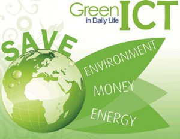
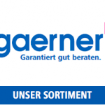

Nachhaltigkeit im Büro
Nachhaltigkeit ist eines der Themen des 21. Jahrhunderts. Das Bewusstsein für endliche Ressourcen und Rohstoffe ist vorhanden und dennoch zögern viele Unternehmen damit ihren Beitrag zum systematischen Wandel beizutragen. Dabei gibt es bereits viele positive Beispiele von Unternehmen, die verstanden haben, dass Nachhaltigkeit auch ein Wettbewerbsvorteil gegenüber den eigenen Mitbewerbern sein kann. Wer sich nicht gleich an die ganz großen Veränderungen herantraut, kann zunächst mit kleinen Schritten einen Beitrag zur Nachhaltigkeit leisten. Denn selbst mit wenigen Maßnahmen im Büro lassen sich sowohl die Umwelt schonen als auch innerbetriebliche Aspekte optimieren.
Bewusstsein für Nachhaltigkeit schärfen
Jeder Unternehmer und Entscheidungsträger sollte sich darüber bewusst sein, dass er die Verantwortung darüber trägt, wie sorgfältig mit begrenzten Ressourcen in der eigenen Firma umgegangen wird. Darüber hinaus sind auch in den 10 Prinzipien der „UN Global Compact“ gute Anhaltspunkte, die ein jeder Unternehmer sich ins Bewusstsein rufen sollte. Auch der Deutsche Nachhaltigkeitskodex umfasst 20 Kriterien mit denen sich die Nachhaltigkeit eines Unternehmens beurteilen lässt. Menschenrechte, Arbeitsrechte, Umwelterhaltung, Lieferantenkette und Anti-Korruption sind keine hohlen Phrasen, sondern sollten auf allen Entscheidungsebenen eine gewichtige Rolle spielen. Neben dem Handeln aus Überzeugung sind natürlich auch eine positive Außendarstellung des Unternehmens und wirtschaftliche Faktoren eng mit dem Thema Nachhaltigkeit verbunden.
In wenigen Schritten zum nachhaltigen Büro
Das Frauenhofer Institut für Arbeitswirtschaft und Organisation (IAO) hat in der Studie „Green Office 2014“ untersucht, wie hoch der Stellenwert ist Maßnahmen zur Nachhaltigkeit im Büro umzusetzen. Gegenüber der vorherigen Studie von 2010 ist eine deutlich positivere Tendenz zu erkennen. Insbesondere die Bereiche Dokumentationsmanagement, IT-Beschaffung, erneuerbare Energien und Möblierung des Büros haben große Einsparungspotentiale und sollten von Unternehmen zuerst angegangen werden. Die größten Barrieren liegen hingegen noch immer im zur Verfügung stehenden Investitionskapital und auch fehlenden Informationen zur Umsetzung entsprechender Maßnahmen.
Auf dem Weg zum papierlosen Büro
 Ein komplett papierloses Büro ist für viele Unternehmen noch schwer vorstellbar. Das Ziel dieser Formulierung liegt vielmehr darin den Verbrauch von Papier entscheidend zu reduzieren. Immer möchte ich betonen, dass für die ersten Schritte in diese Richtung keine neue Soft- oder Hardware angeschafft werden muss. Oft reicht es schon, Schnittstellen in Prozessen zu eliminieren und vor allem Doppelablage zu vermeiden. Viele Dokumente werden noch in Papier abgelegt, obwohl sie elektronisch vorhanden sind. Grund hierfür ist nicht selten der Irrglaube, dass nur ein Papierdokument ein Originaldokument und damit aufbewahrungspflichtig sei. Das trifft für viele Geschäftsprozesse schon lange nicht mehr zu. Ist das Dokument elektronisch erzeugt, ist es in dieser Form das Original und entsprechend aufzubewahren.
Ein komplett papierloses Büro ist für viele Unternehmen noch schwer vorstellbar. Das Ziel dieser Formulierung liegt vielmehr darin den Verbrauch von Papier entscheidend zu reduzieren. Immer möchte ich betonen, dass für die ersten Schritte in diese Richtung keine neue Soft- oder Hardware angeschafft werden muss. Oft reicht es schon, Schnittstellen in Prozessen zu eliminieren und vor allem Doppelablage zu vermeiden. Viele Dokumente werden noch in Papier abgelegt, obwohl sie elektronisch vorhanden sind. Grund hierfür ist nicht selten der Irrglaube, dass nur ein Papierdokument ein Originaldokument und damit aufbewahrungspflichtig sei. Das trifft für viele Geschäftsprozesse schon lange nicht mehr zu. Ist das Dokument elektronisch erzeugt, ist es in dieser Form das Original und entsprechend aufzubewahren.
Mit der Umstellung von Papier auf elektronische Datenträger wird zudem nicht nur die Umwelt geschont, sondern es ergeben sich auch zahlreiche Vorteile für das eigene Unternehmen:
Die Kosten für Papier, Farbpatronen, Toner und den Briefversand werden reduziert. Der Aufwand (und damit auch die Arbeitszeit) für die Archivierung und der Stauraum für die Aufbewahrung verringern sich. Elektronisch gespeicherte Dokumente sind in der Regel schneller und leichter auffindbar, da die elektronischen Systeme eine Suchhilfe sind. Zudem ist mittlerweile durch verschiedenste Softwarelösungen oder das Mitführen eines Laptops der Zugriff auf die benötigten Materialien an jedem Ort möglich.
Mit Bedacht neue IT-Anschaffungen angehen

Häufig unter dem Begriff „Green-IT“ zusammengefasst, versteht sich der ressourcenschonende Einsatz von Kommunikations- und Informationstechnologien. Wie bereits erwähnt, trägt die moderne Informationstechnik dazu bei, dass beispielsweise Kundentermine bequem aus dem Büro durchgeführt werden können, indem Videokonferenzen einberufen werden. Darüber hinaus sollten Unternehmen auch darauf setzen ein möglichst schlankes Inventar an IT-Geräten zu besitzen. Durch eine strukturierte Bestandsaufnahme lässt sich schnell erfassen, ob neue IT-Geräte überhaupt angeschafft werden müssen. In manchen Fällen kann schon eine organisierte Umverteilung der Geräte die Bedürfnisse decken und zufriedenstellen. Im Falle einer Neuanschaffung sollte unbedingt auf qualitativ hochwertige Produkte geachtet werden. Der Anschaffungspreis darf also durchaus etwas höher ausfallen, wenn das Gerät ressourcenschonender arbeitet und über langlebige Bauteile verfügt. Am Ende rentieren sich diese Geräte auch durch geringere Wartungs- und Energiekosten und höhere Laufzeiten. Aus der ökologischen Perspektive werden CO²-Emissionen, Stromverbrauch und Elektroabfall verringert. Auch die umweltschonende Entsorgung und Wiederverwendung aussortierter Geräte sind Teil der „Green-IT“.Die Büroausstattung sorgfältig wählen
Auch bei der Ausstattung der Büros und beim Kauf von neuen Büromöbeln kann auf Nachhaltigkeit geachtet werden. Der Arbeitgeber kann beispielsweise mit Hilfe von Biomöbeln einen Beitrag zum Klimaschutz leisten und dabei gleichzeitig die Arbeitsbedingungen optimieren. Zertifizierte Biomöbel zeichnen sich dadurch aus, dass sie auf gesundheits- und umweltschädliche Inhaltsstoffe geprüft sind. Ebenso steht eine umweltschonende Produktion unter Beachtung der Emissionswerte im Vordergrund. Ein weiterer positiver Effekt von zertifizierten Biomöbeln hängt direkt mit den Arbeitnehmern zusammen. Denn schadstoffbelastete Büromöbel können Einfluss auf die Gesundheit der Mitarbeiter haben. Nachlassende Konzentrationsfähigkeit und Müdigkeit sind die Folgen, wenn der Mensch am Arbeitsplatz einer zu hohen Belastung ausgesetzt ist.

Neben der Einhaltung sozialer und ökonomischer Richtlinien bei den Möbeln kann zudem auch bereits in der Lieferantenkette auf Nachhaltigkeit geachtet werden. So bietet der B2B-Versandhändler gaerner nachhaltige und zertifizierte Büroausstattungen an. Zur Herstellung der Produkte werden hier langlebige und umweltgerechte Materialien verwendet. Darüber hinaus sind im Sinne der Gesundheit ergonomische Büromöbel bevorzugt zu behandeln.Weitere Artikel

Digitale Tools für Zusammenarbeit im Office
E-Mail, Digitale Ablage und eine Branchensoftware sind schon lange nicht mehr genug für effiziente Zusammenarbeit. Doch bevor Sie sich in einem Dschungel an digitalen Werkzeugen verlieren, sollten Sie sich über die Systematik …

Veränderung braucht Gewohnheit
Sowohl im Berufs-als auch im Privatleben sind wir ständig im Veränderungsmodus. Manche Veränderungen wollen wir umsetzen, manche müssen wir mitmachen. Wir alles wissen, dass Veränderung nie leicht sind und je länger wir etwas auf …